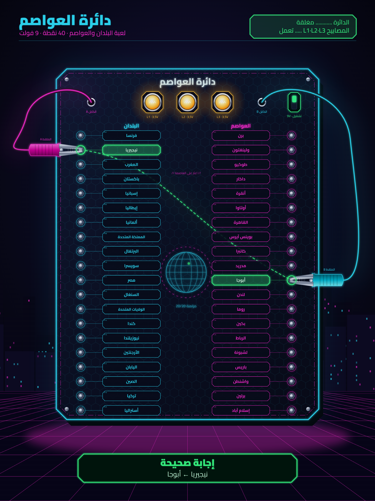

لعبة البلدان والعواصم · دليل التركيب · نسخة 9 فولت

قبل البدءدائرة العواصم
كيف تعمل اللعبة؟
يحمل اللوح 20 قضيبًا معدنيًا للبلدان و20 قضيبًا للعواصم. في الخلف، يُوصَل كل بلد بعاصمته هو بسلك واحد، ولا شيء غير ذلك.
يخرج من اللوح كابلان ينتهيان بـملقطَي تمساح. عندما نمسك بلدًا وعاصمته الصحيحة، يدور التيار في الدائرة فتضيء المصابيح الثلاثة.
أما إذا كان الزوج خاطئًا فلا يوجد طريق للتيار، وتبقى المصابيح مطفأة.
حلقة واحدة: الموجب + للبطارية ← القاطع ← L1 ← L2 ← L3 ← الملقط B ← قضيب العاصمة ← السلك المخفي ← قضيب البلد ← الملقط A ← السالب − للبطارية.
المراحل
تحديد أماكن الثقوب
الثقب
تركيب الأرجل
تركيب المصابيح والقاطع
تحضير الأسلاك العشرين
تركيب القضبان وربط الأزواج
توصيل المصابيح والبطارية
تركيب الكابلين والملقطين
الاختبار
البطاقات واللمسات الأخيرة
السلامة
قواعد
المثقاب والمنشار يستعملهما شخص بالغ فقط، مع نظارات واقية. تُثبَّت القطعة بملزمة، ولا تُمسك باليد أبدًا.
البطارية 9 فولت فقط: أبدًا لا محوّل كهربائي ولا مقبس الكهرباء المنزلية.
لا تصل قطبَي البطارية مباشرة ببعضهما (دون المرور بالمصابيح): تسخن البطارية والأسلاك.
المصابيح المضاءة تسخن قليلًا: لا تلمسها بعد استعمال طويل.
من يفعل ماذا؟ الشخص البالغ: النشر والثقب والتجويف. ويستطيع ابنك أن يقوم بـ: الصنفرة، الطلاء، تعرية الأسلاك، تركيب القضبان، توصيل الأزواج العشرين، الاختبارات، البطاقات.
دائرة العواصم · دليل التركيب2
المواد والأدواتدائرة العواصم
المواد
الأدوات
الأداة
الاستعمال
الأداة
الاستعمال
مثقاب كهربائي + ريش خشب 3 و4 و6 و8 مم
كل الثقوب
ريشة فورستنر 25 مم
تجويف القاطع
منشار (أو القصّ في المتجر)
اللوح والأرجل
مفتاح ربط 7 مم (أو كمّاشة)
صواميل M4
مفكّ مسطّح ومفكّ صليبي
القضبان، القواعد، الملاقط
كمّاشة تعرية + قطّاعة
الأسلاك
مسطرة 50 سم، زاوية قائمة، قلم رصاص
التخطيط
ورق صنفرة 120، فرشاة
التشطيب
ملزمة + قطعة خشب زائدة
ثقب نظيف
غراء خشب، 4 براغي خشب 4 × 45
الأرجل
تحقّق عند الشراء يجب أن تكون المصابيح الثلاثة متطابقة، 3,5 فولت، بقاعدة E10. على التوالي مع 9 فولت، يحصل كل مصباح على نحو 3 فولت. المصابيح ذات 6 أو 9 فولت تبقى شبه مطفأة.
دائرة العواصم · دليل التركيب3
المرحلتان 1 – 2 · التخطيط والثقبدائرة العواصم
1تحديد أماكن الثقوب
المقاسات بالمليمتر من الزاوية العليا اليسرى (منظر أمامي)
الطريقة أ، بالقالب: اطبع الصفحة 1 من gabarits-A3.pdf بنسبة 100% (مقاس A3، في محل نسخ)، وتأكّد أن شريط المراقبة طوله 100 مم، ثم ألصقها على اللوح وعلّم كل علامة + بضربة مسمار. حاذِ الورقة مع الحافتين اليسرى والعليا للوح؛ وهي تُظهر أيضًا ثقوب المصابيح والقاطع والمخرجين A وB.
الطريقة ب، بالمسطرة:
خط البلدان العمودي على x = 28 mm، وخط العواصم على x = 269 mm.
الصف الأول على y = 76 mm، ثم صفّ كل 16,5 مم (20 صفًا؛ الأخير على y = 389,5).
في الأعلى، على الخط y = 38 mm: الكابل A عند x = 40، المصابيح عند x = 110 و150 و190، الكابل B عند x = 235، القاطع عند x = 272.
تحقّق: 46 علامة: 40 قضيبًا + 3 مصابيح + كابلان + قاطع. الصفوف اليسرى واليمنى على نفس الارتفاع.
2الثقب
قطعة الخشب في الأسفل تمنع تشقّق الوجه الخلفي
الثقب
العدد
القطر
قضبان البلدان والعواصم
40
4 مم
مرور أسلاك المصابيح (تحت كل قاعدة)
3
8 مم
مخرجا الكابلين A وB
2
6 مم
القاطع
1
*6 مم
ثبّت اللوح فوق قطعة خشب زائدة بملزمة.
اثقب أولًا كل الثقوب بقطر 3 مم (ثقوب تمهيدية)، ثم بالقطر النهائي.
* في الخلف، مكان القاطع، احفر تجويفًا قطره 25 مم وعمقه 7 مم (ريشة فورستنر): يبقى 3 مم فقط من الخشب، فيستطيع اللولب القصير للقاطع أن يبرز من الأمام.
القاطع: تحقّق من القطر في بطاقته التقنية (غالبًا 6 مم للقاطع ذي الذراع الصغير، و12 مم لبعض الأنواع).
الصق رِجلًا (20 × 20 × 30 مم) في كل زاوية، محاذية للحافتين. الزوايا هي المكان الوحيد الفارغ: القضبان تمرّ على بعد 23 مم من الحافة اليسرى و26 مم من الأسفل.
ثبّت كل رِجل ببرغي خشب 4 × 45 من الوجه الأمامي، على بعد 10 مم من الحافتين (ثقب تمهيدي 3 مم، رأس غاطس)، ثم لمسة طلاء أسود على الرأس.
انتبه، منظر خلفي: عندما يكون اللوح مقلوبًا، يتبادل اليمين واليسار: قضبان البلدان على اليمين، والعواصم على اليسار.
تحقّق: اللوح ثابت على أرجله ولا يتأرجح، ويترك 30 مم من الفراغ تحته للأسلاك والبطارية.
4تركيب قواعد المصابيح الثلاث والقاطع
القواعد مثبّتة من الأمام، والقاطع داخل تجويفه
ثبّت كل قاعدة E10 فوق ثقبها ذي القطر 8 مم (برغيا خشب صغيران). يُستعمل الثقب لتمرير الأسلاك نحو الخلف.
لا تركّب المصابيح الآن.
أدخل القاطع من الخلف، داخل التجويف. اربط صامولته من الأمام، والذراع إلى الأعلى = تشغيل.
نصيحة: اكتب بقلم الرصاص في الخلف L1 (اليسار، في المنظر الأمامي) ثم L2 وL3: في المنظر الخلفي يكون L1 على اليمين.
دائرة العواصم · دليل التركيب5
المرحلة 5 · تحضير الأسلاك والقضباندائرة العواصم
5تحضير الأسلاك العشرين
اصنع العروة حول مفكّ قطره 4 مم، في اتجاه عقارب الساعة
اقطع 20 سلكًا طول كل منها 45 سم، وهذا يكفي لربط أي بلد بأي عاصمة.
عرِّ 1 سم من كل طرف، ابرم أسلاك النحاس الرفيعة، ثم اصنع عروة صغيرة.
تُركّب العروة في اتجاه عقارب الساعة حول البرغي: عند الشدّ تنغلق بدل أن تنفتح.
iكيف يُصنع القضيب؟
مقطع لقضيب: البرغي يخترق اللوح من الخلف، والسلك مشدود تحت رأسه
لماذا من الخلف؟ رأس البرغي يشدّ السلك في الخلف؛ وفي الأمام لا يبقى إلا الجزء الملولب الذي يعضّه ملقط التمساح جيدًا.
دائرة العواصم · دليل التركيب6
المرحلة 6 · تركيب القضبان وربط الأزواجدائرة العواصم
أدخل عروة السلك في برغي M4، مع حلقة معدنية من كل جانب للعروة.
أدخل البرغي من الخلف في الثقب P1.
في الأمام: حلقة + صامولة. أمسك الرأس بالمفكّ من الخلف، واشدد الصامولة بمفتاح 7.
افعل الشيء نفسه بالطرف الآخر للسلك في الثقب C17.
ضع علامة على سطر الجدول، وانتقل إلى السلك التالي.
الفخّ: في المنظر الخلفي، البلدان (P) على اليمين. تحقّق من رقم الثقب مرتين قبل الشدّ.
أسلاك مرتّبة: اترك الأسلاك تمرّ بحرية تحت اللوح. يجب ألّا يلمس أي نحاس عارٍ برغيًا آخر.
P = بلد، C = عاصمة. هذه الرموز مكتوبة على القالب وعلى البطاقات.
دائرة العواصم · دليل التركيب7
المرحلة 7 · دائرة المصابيحدائرة العواصم
7توصيل المصابيح والقاطع والبطارية
منظر خلفي للجزء العلوي (L1 على اليمين والقاطع على اليسار؛ القضبان الأربعون في الأسفل غير مرسومة). بالترتيب: من ① إلى ⑥
① السلك الأحمر (+) لمشبك البطارية ← أحد طرفَي القاطع (بموصّل دومينو عند الحاجة).
② الطرف الآخر للقاطع ← أحد برغيَي القاعدة L1.
③ البرغي الآخر لـL1 ← أحد برغيَي L2.
④ البرغي الآخر لـL2 ← أحد برغيَي L3.
⑤ البرغي الآخر لـL3 ← الكابل B (دومينو، بجانب المخرج B).
⑥ السلك الأسود (−) للمشبك ← الكابل A (دومينو، بجانب المخرج A).
المصابيح ليس لها اتجاه: يمكن توصيل برغيَي القاعدة بأي ترتيب.
قاطع بأطراف للّحام: بدون كاوية لحام، استعمل أطرافًا أنثوية 4,8 مم تُكبس، أو اطلب من شخص بالغ أن يلحمها.
لا تركّب البطارية الآن: لا تضع البطارية إلا في المرحلة 9، والقاطع على وضع الإيقاف.
ثبّت البطارية في الخلف بقطعة «فيلكرو» لاصقة، بعيدًا عن براغي القضبان.
دائرة العواصم · دليل التركيب8
المرحلة 8 · الكابلان وملقطا التمساحدائرة العواصم
8تركيب الكابلين A وB والملقطين
أ. عقدة توقيف خلف المخرج · ب. التعرية · ج. تثبيت الملقط · د. إعادة الغلاف
اقطع كابلين مرنين طول كل منهما 1 م: A (وردي أو أحمر) وB (أزرق).
مرّر كل كابل في مخرجه ذي القطر 6 مم، من الأمام نحو الخلف.
اعقد عقدة في الكابل خلف اللوح مباشرة: إذا شدّ ابنك الملقط، تتحمّل العقدة القوة لا الدومينو.
صِل الطرف الخلفي بالدومينو الخاص به (المرحلة 7: A مع الأسود −، وB مع مخرج L3).
من جهة الأمام: أدخل أولًا الغلاف العازل للملقط في الكابل.
عرِّ 1 سم، ابرم النحاس، واشدده تحت برغي الملقط (أو في اللسان المعدني الذي يُكبس بالكمّاشة).
اسحب الغلاف فوق الملقط.
الألوان: غلاف وردي على A وأزرق على B، كما في الصورة. سيعرف ابنك بسرعة أي ملقط يذهب إلى جهة البلدان وأيّهما إلى جهة العواصم (في الحقيقة، الاتجاهان يعملان).
تحقّق: اسحب كل ملقط بقوة: لا شيء يتحرك خلف اللوح. الملقط ينفتح وينغلق على القضيب دون أن ينزلق.
ركّب المصابيح الثلاثة. ضع البطارية في مشبكها، والقاطع على التشغيل. قم بالاختبارات بالترتيب:
الاختبار
ماذا تفعل
النتيجة المنتظرة
وإلا
1
الملقط A على الملقط B
تضيء المصابيح الثلاثة
مصباح غير مشدود، القاطع على الإيقاف، بطارية فارغة، دومينو مرتخٍ
2
الأزواج الصحيحة العشرون في الجدول
إضاءة في كل مرة
سلك غير مشدود في هذا الزوج، ثقب خاطئ
3
P1–P2, P2–P3, …, P19–P20، ثم C1–C2, …, C19–C20
مطفأة في كل مرة
عروتان أو سلكان عاريان يتلامسان في الخلف
4
القاطع على الإيقاف، والملقطان معًا
مطفأة
القاطع موصول بشكل خاطئ
10البطاقات واللمسات الأخيرة
بطاقات نيون على خلفية سوداء، وشريط فوسفوري
اطبع etiquettes-AR.pdf بنسبة 100% (أو gabarit.html مع الموضوع «العالم (بالعربية)» لشبكة جديدة). تأكّد أن عرض بطاقة الاسم 63 مم.
تحقّق أن الشريط الأحمر في أسفل كل صفحة طوله 100 مم: المسافات يجب أن تطابق القضبان بالضبط.
في etiquettes-AR.pdf: البلدان على صفحتين والعواصم على صفحتين، والبطاقات في عمود داخل إطار وبالمسافات الحقيقية. قصّ على حافة الإطار، وأزل الدوائر البيضاء (11 مم)، ثم ضع اللوحة فوق القضبان: يمرّ كل قضيب في حلقته. اجمع الجزأين طرفًا لطرف عند العلامات ▲▼. العنوان في الأعلى (بين 5 و21 مم). الصق بعجينة لاصقة.
ألصق الشريط الفوسفوري على بعد 5 مم من الحافة.
اللعب من جديد دون غشّ: شبكة بطاقات جديدة تغيّر أماكن الأسماء دون لمس الأسلاك.
دائرة العواصم · دليل التركيب10
اللعب وحلّ الأعطالدائرة العواصم
قواعد اللعبة
القاطع على التشغيل. يمسك اللاعب بلدًا بالملقط A.
يقول اسم العاصمة بصوت عالٍ، ثم يمسك البطاقة المناسبة بالملقط B.
إذا أضاءت المصابيح وكان قد قال العاصمة قبلها: نقطة واحدة. إذا بقيت مطفأة: ينتقل الدور.
تنتهي الجولة عندما تُكتشف البلدان العشرون. الفائز صاحب أكبر عدد من النقاط.
نسخة بالتوقيت: إيجاد الأزواج العشرين في أسرع وقت.
لماذا نقول الجواب أولًا؟ بدون هذه القاعدة، يمكن إيجاد كل شيء بتجربة العواصم واحدة تلو الأخرى. قول الجواب أولًا يجبر اللاعب على أن يعرف.
بعد اللعب: القاطع على الإيقاف، والملقطان منفصلان، حتى لا تفرغ البطارية.
حلّ الأعطال
العَرَض
السبب المحتمل
الحلّ
لا شيء يضيء، حتى مع الملقطين معًا
مصباح غير مشدود أو محترق (على التوالي، يكفي مصباح واحد لإطفاء الكل)، بطارية فارغة، القاطع على الإيقاف
أعد شدّ المصابيح الثلاثة، جرّب كل مصباح على البطارية، غيّر البطارية
المصابيح ضعيفة جدًا
بطارية مستهلكة، أو مصابيح 6 أو 9 فولت بدل 3,5 فولت
غيّر البطارية، تحقّق من الكتابة على المصابيح
مصباح يضيء والآخران لا
مستحيل على التوالي: تحقّق أنه لا يوجد سلك يقصر قاعدتين
اتبع التوصيل من ① إلى ⑥ في المرحلة 7
زوج صحيح يبقى مطفأ
سلك مرتخٍ، عروة غير مشدودة، ثقب خاطئ
أعد شدّ صامولتَي الزوج، راجع الجدول
زوج خاطئ يضيء
سلكان أو عروتان تتلامس في الخلف
ابحث عن النحاس العاري البارز بين القضيبين المعنيّين
يعمل أحيانًا فقط
دومينو أو ملقط غير مشدود
أعد الشدّ، وأعد تعرية السلك
البطارية تفرغ بسرعة
الملقطان بقيا متلامسين والقاطع على التشغيل
ضع القاطع على الإيقاف بعد اللعب؛ أو استعمل علبة 6 بطاريات AA (9 فولت، تدوم نحو 5 مرات أكثر)
دائرة العواصم · دليل التركيب11
ملحق · خاص بالأولياءدائرة العواصم
التوصيل والشبكة رقم 0
هذا الجدول يكشف الأجوبة: احتفظ بهذه الصفحة بعيدًا عن نظر اللاعب. التوصيل لا يتغيّر أبدًا؛ البطاقات وحدها تتغيّر من شبكة إلى أخرى.